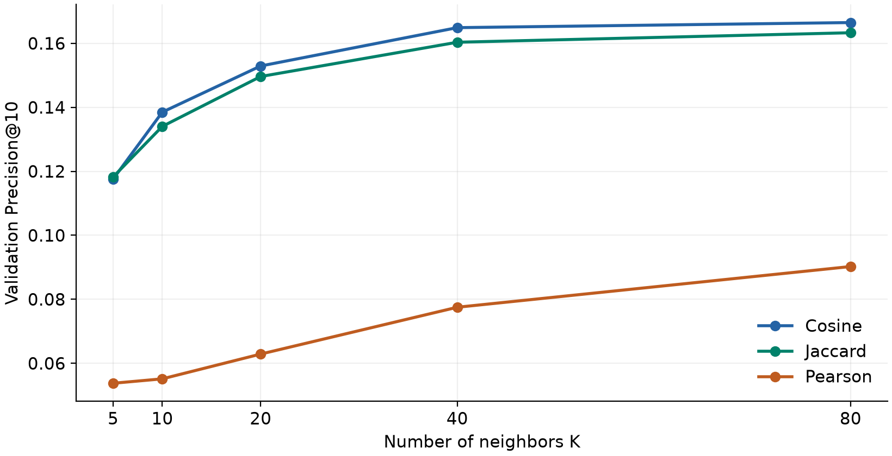
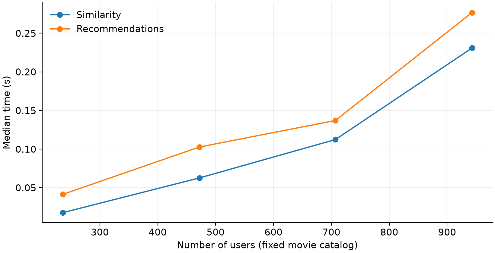

实验目的
实现基于用户的协同过滤，比较余弦、Jaccard 与 Pearson 相似度。
实现要点
- 使用 MovieLens 100K 评分数据，在验证集选参，再在独立测试集评估。
- 比较 Precision@10、Recall@10、覆盖率与运行时间，并保留热门电影基线。
- 提供原报告与优化版报告，方便追溯实验版本；复现实验请按说明下载数据。
运行结果



实现基于用户的协同过滤，比较余弦、Jaccard 与 Pearson 相似度。

